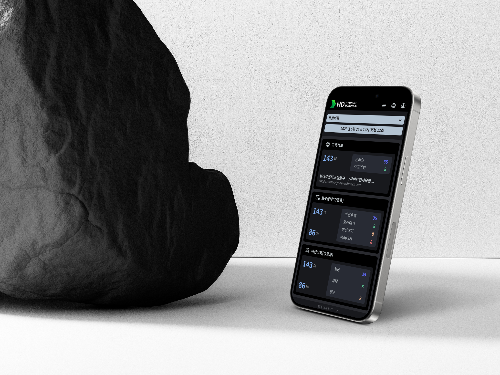
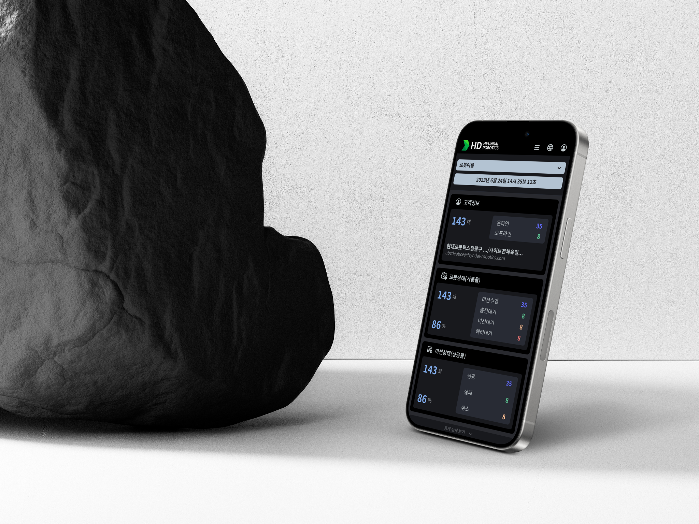

Hyundai Robotics
현대 로봇틱스 프로젝트는 방역 관제 로봇을 관리하는 반응형 웹사이트를 개발하는 프로젝트였습니다. 이 프로젝트의 주요 도전 과제는 한 달이라는 제한된 시간 가시성 높은 디자인과 개별 로봇과 전체, 개별 로봇 상태를 쉽게 파악할 수 있는 플로우로 로봇의 정보들을 한 눈에 파악하게 쉽게 대시보드를 설계하는 것이었습니다.
저는 이 프로젝트에서 로봇 상태 관련된 개념을 정리하고, 이를 기반으로 대시보드를 디자인하고, 디자인 시스템을 구축하는 역할을 수행했습니다. 그러나 개념 정리를 진행하던 중 고객사와의 커뮤니케이션 오류로 인해 프로젝트 일정이 2주 연기되었습니다. 이로 인해 화면 설계 이전 단계에서 효율적인 ‘개념 정리’ 의사소통 방법에 대해 좀 더 깊이 고민하게 되었습니다. 그러나 다행히도 비교적 빠르게 디자인 시스템을 완성시켰고, 이는 빠른 속도로 완성되었을 뿐 아니라 현대 로봇틱스의 다른 프로젝트(서빙로봇 인스톨러)에도 적용되어 사용될만큼 완성도 있게 마무리할 수 있었습니다.
현대 로봇틱스 프로젝트를 통해 저는 UI 디자이너로서의 역량을 빠르게 성장시킬 수 있었으며, 프로젝트 매니저로서의 역량도 시험하고 발전시킬 수 있는 기회를 얻었습니다.
Color System
과학적인scientific 무드를 위해 다크모드를 선택하였습니다.
primary color는 어두운 그레이톤과 어울리며, data를 표현하는 색들과 구분되어 튀지 않은 중명도 중채도의 블루를 사용하였습니다.
데이터를 표현하는 graph의 컬러들은 서로 구분이 되는 블루, 그린, 오렌지, 레드의 색을 사용했습니다.
Font System
현대방역로봇 관제 서비스는 다국어 지원이 가능한 서비스로 여러 언어로 전환시 시각적 안정성을 위해 Noto Sans 폰트를 선택했습니다.개발의 편의성을 위해 디폴트폰트(15px, Regular)와 자간을 정의하였고, 이를 기준으로 최소한의 사이즈 변주를 주어 디자인을 완성하였습니다.
Icon Style
대시보드에 표현되는 정보들은 크게 로봇에 대한 것, 로봇에 부여된 미션에 대한 것, 사용자가 대응해야 하는 것(알림)으로 구별됩니다. 아이콘들은 각각의 정보들을 계층화하여 정보의 속성(label)이 쉽게 구별될 수 있게 표현하였습니다.
Components Library
로봇의 상태를 나타내는 각각의 그래프들과 표의 표현이 가시성이 높으면서도 편안하게 읽힐 수 있도록 그라디언트를 적극 사용하였습니다.
정보 중요도에 맞게 글씨 크기를 조절하여 직관적인 활용을 돕습니다.

 
